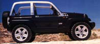

Starting in 1996, Alexa Internet has been donating their crawl data to the Internet Archive. Flowing in every day, these data are added to the Wayback Machine after an embargo period.
Crawl data donated by Alexa Internet. This data is currently not publicly accessible
TIMESTAMPS
The Wayback Machine - https://web.archive.org/web/20040803092436/http://www.auto-air-conditioner.com:80/index.html
A Portable Auto Air Conditioner is easy to move from vehicle to vehicle!

Use Energy Efficient Portable Cooling to save money while
cooling you in your auto, home, office, boat, camper, or other
vehicle. This type of cooling such as an Auto Air Conditioner
is designed to either supplement your present cooling system or
stand alone as the only cooling you may need.
One of the differences between the two are the methods used
to produce cool temperatures; refrigeration or evaporation. An
Evaporative Cooler has cool temperatures that feels like an ocean
breeze. Refrigeration produces dry cool temperatures like you
feel in an Planes Cabin. People in dry climates most generally
prefer an Evaporative Cooling and those in humid areas generally
choose refrigeration.
Both systems are preferred to cool people in a specific
area; for example 'spot cooling'. They can be moved from place
to place, thereby eliminating the need to expend vast amounts
of energy to cool a large area. Portable Cooling saves not only
energy, but also money. You may have a central system of some
type, however it could be set at a higher temperature to save
energy, while using Portable Models for Spot Cooling.
The following question was taken
from our FAQ Section
1. How Large an Area will a Portable Device cool?
Seems like a logical question, however Portable Cooling
Systems are typically designed for Spot Cooling, not area cooling.
We do not know if the area to be cooled is well insulated or if
it is cool to begin with or if there is enough power and other
resources to maintain a full power-on situation. It does not matter
if you are using a Portable Cooling System in an auditorium or
a phone booth. Size does not make any difference because you will
place the Portable device where you need it! That is the advantage
of Portable Systems.
We always recommend you install properly sized refrigerated
central systems if you are not limited to either energy or financial
resources. However if you are limited to either or both resources,
then consider Portable Spot Cooling! These systems work well
unless you need to cool the pictures on the walls or all the people
in a vehicle; in which case you must install a properly sized
permanently mounted central system.
The bottom line: If there is no limit on resources install
a properly sized built-in cooling device. If, on the other hand,
there are limited resources of energy and/or finances utilize
a Portable Cooling System to provide that needed relief from the
heat! Our Portable Auto Air Conditioners
are strong enough to blow the papers off your desk, yet much quieter
than TV commercials! More Answers on this
subject.